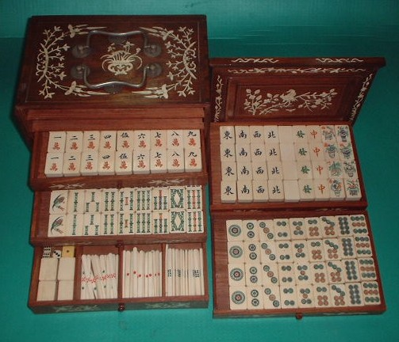
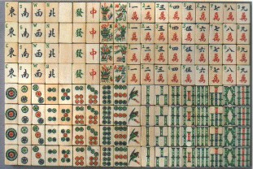
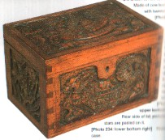
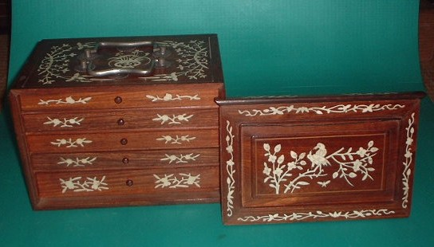

Tile colection 珍奇牌。
（1７）象嵌箱入り孟宗竹タイプ古牌
1930年代初期の上海製牛骨牌。
１索は特徴的な回首鶴の彫り。残りの索子も太い孟宗竹タイプのしっかりした彫り。中国の同一の彫り職人の手になると思われるが、一級品の彫りである。幻の名人といいたいが、当時はこれくらいの腕の彫り師はごろごろしていた。

実はこれとまったく同一の彫りのセットが麻雀博物館にも収蔵されている（麻雀大図録p122・写真番号231）。よくみるとお分かりになると思うが、ここで紹介した牌には何のインデックスも入っていない。しかし博物館収蔵牌の風牌と万子には、アルファベットのインデックスが入っている。＜博物館収蔵牌↓＞

牌にアルファベットのインデックスを入れるようになったのは、もちろん英米などへの輸出が盛んになってからである。インデックスは彫り師が入れるのではなく、牌が彫りあがってから別な人間が入れていた。そのことは以前から知られていたが、この牌がその証拠。
※後期になると、最初から彫り師がインデックスを入れるようになった。そのため逆流れの３筒・７筒が彫られるようになった。
麻雀博物館の収蔵品も、彫りの深い木彫が施されたがっしりした箱付きである。＜博物館収蔵牌の箱↓＞
しかしこちらの牌は、象嵌が施された優雅な箱に入っている。牌も牌だが、この箱がまたすばらしい。

よく言うように、古いモノの場合、資料的価値と美術工芸品としての骨董的価値は別問題。そしてなどちらの価値も高いというものはそれほど多くない。しかしこの牌は、両者の価値もかなり高い。というわけで気になる値段であるが（笑）、鑑定歴20年のσ(-_-)の査定はＸＸＸＸ円....(^0^；